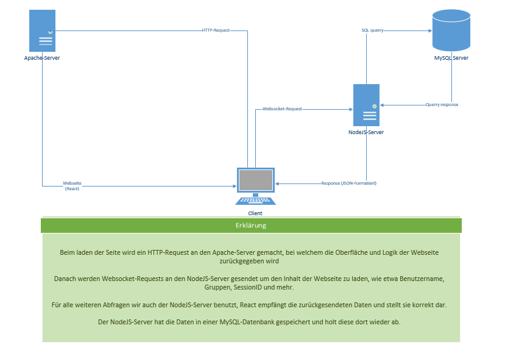

FoodMood
Kurzinfo
Themenbereich
Webentwicklung
Lernende/r
Donato Wolfisberg
Jonas Koller
Lehrbetrieb
CSS Versicherung AG
Betreuer
Urs Nussbaumer
Aufgabenstellung
Unser Projekt beschäftigte sich mit der Entwicklung einer Webapplikation, welche das Planen von Menus ermöglicht. Momentan planen wir jede Woche selbst was wir essen wollen, was Zeit kostet. Mit der Webseite soll es möglich sein, seine Menüpläne automatisch generieren zu lassen. Am Ende sollte man Menüs eintragen können und damit einen Menüplan generieren lassen können, welchen man Online abrufen kann.
Ergebnisse
Wir konnten leider nicht alles geplante umsetzen, allerdings haben wir viele Funktionen umgesetzt. So haben wir z.B.
- ein Funktionierendes Login mit Sessionfunktion
- die Möglichkeit via GUI neue Benutzer zu registrieren
- die Möglichkeit Gruppen zu erstellen und andere Nutzer in diese einzuladen
- eine Verwaltung der Nutzer und Gruppen im GUI
- eine Startseite und eine Rechteverwaltung für die Nutzer
Lösungskonzept
Unsere Webseite haben wir mit React, NodeJS und Websockets realisiert. React ist ein JavaScript-Framework mit welchem man Webseiten-Oberflächen macht. Damit die Webseite dynamisch ist, haben wir den Inhalt auf einem Server, welcher diesen dann an React schickt. Dieser Server ist mit NodeJS gemacht. Das Login und alle anderen Aktionen laufen auch über diesen Server, mit sogenannten Requests welche vom Client geschickt werden. Der Server reagiert darauf und sendet die Antwort an React zurück, welches das Ergebins dann darstellt. Damit der Server und der Client miteinander kommunizieren können, braucht es eine Verbindung. Diese haben wir mit Websockets realisiert. Vorteil daran ist, dass diese sehr schnell sind und wenig Traffic verursachen. 
Aufgetretene Probleme
Unser erstes grosses Problem bestand in der Zeitplanung, da wir noch nicht so geübt darin waren und bei vielen Funktionen den Aufwand falsch eingeschätzt haben. Aufgrund dessen konnten auch mehrere Funktionen nicht umgesetzt werden, welche geplant gewesen wären. Ein weiteres Problem ist am Ende des Projekts aufgetaucht, beim Testen auf dem endgültigen Apache-Server, denn dieser konnte mit React-Router(das von uns verwendete Routingsystem) nicht umgehen. Bei unseren Tests auf dem Localhost funktionierte dies immer einwandfrei. Das Problem konnte dann aber gelöst werden durch eine kleine Umprogrammierung am Client. Dann waren noch sehr viele kleine Probleme, welche allerdings auch Zeit beanspruchten um sie zu lösen. Aufgrund der fehlenden Zeit konnten folgende geplante Funktionen nicht umgesetzt werden:
- Menüs entfernen
- Rechnungen erfassen und verwalten
- Accountdaten einstellen
- Erweiterte Einstellungen bei Gruppen
Ausblick
Das Projekt ist mit dem Ende der Zeit abgeschlossen und wir werden nicht mehr daran arbeiten und es nicht mehr weiter entwickeln.